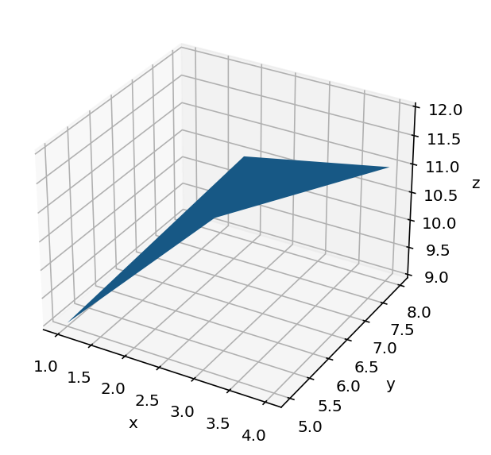
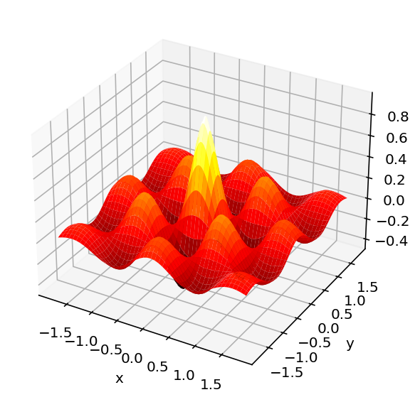

import numpy as np
import matplotlib.pyplot as plt
from mpl_toolkits.mplot3d import axes3d
%matplotlib inline
%config InlineBackend.figure_format = 'retina'This is adapted from the following Tutorial: Link
fig = plt.figure(1, clear=True)
ax = fig.add_subplot(1,1,1, projection='3d')
x = np.array([[1, 3], [2, 4]]) #Array format: [[a,b],[c,d]] -- a b are in row; c d are in row
y = np.array([[5, 6], [7, 8]])
z = np.array([[9, 12], [10, 11]])
ax.plot_surface(x, y, z)
ax.set(xlabel='x', ylabel='y', zlabel='z')
fig.tight_layout()
Meshgrid
Mesh is important to create a surface since just looking at the x, y vector by themselves what you would look at is the diagonal of the matrix formed by combination of all the possible x values with y values. For the given x and y vector, every entry in x vector can have the entire y vector as a possible point. So it is important to generate an array which captures all these possible pairing.
So using mesh-grid if x-vector is of dimensions M and y-vector is of dimensions N – the final resulting matrix is NxM dimensions where every \(n^{th}\) entry in y all the entries of x are added. Finally the ouput is given as x coordinate of that matrix and y coordinate of that matrix.
Example: * \(X\) : \(\begin{bmatrix} x_{1} & x_{2} & x_{3} \end{bmatrix}\) * \(Y\) : \(\begin{bmatrix} y_{1} & y_{2} \end{bmatrix}\)
Then resulting mesh would be: \[ X-Y-Mesh = \begin{bmatrix} x_{1}y_{1} & x_{2}y_{1} & x_{3}y_{1} \\ x_{1}y_{2} & x_{2}y_{2} & x_{3}y_{2} \end{bmatrix}\]
\[ X-path = \begin{bmatrix} x_{1} & x_{2} & x_{3} \\ x_{1} & x_{2} & x_{3} \end{bmatrix}\]
\[ X-path = \begin{bmatrix} y_{1} & y_{1} & y_{1} \\ y_{2} & y_{2} & y_{2} \end{bmatrix}\]
#Setting the bounds of the x and y axis
x_axis_range = np.arange(-2,2.1,1)
y_axis_range = np.arange(-4,4.1,1)
#Make the meshgrid for the x and y
(x,y) = np.meshgrid(x_axis_range, y_axis_range, sparse=True)z = x + y fig = plt.figure(1, clear=True)
ax = fig.add_subplot(1,1,1, projection='3d')
ax.plot_surface(x, y, z)
fig.tight_layout()
Plotting this 2D function: \[ z = e^{-\sqrt {x^2 + y^2}}cos(4x)cos(4y) \] using the surface
import matplotlib.cm as cm
x_axis_bound = np.linspace(-1.8,1.8,100)
y_axis_bound = np.linspace(-1.8,1.8,100)
(x,y) = np.meshgrid(x_axis_bound, y_axis_bound, sparse=True)
def f(x,y):
return np.exp(-np.sqrt( x**2 + y**2 )) * np.cos(4*x) * np.cos(4*y)
Z = f(x,y)
fig = plt.figure(1, clear=True)
ax = fig.add_subplot(1,1,1, projection='3d')
ax.plot_surface(x, y, Z, cmap=cm.hot)
ax.set_xlabel('x')
ax.set_ylabel('y')
fig.tight_layout()